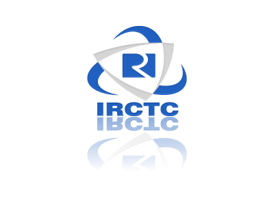

Indian Railway Catering and Tourism Corporation Limited
A Goverment of India Enterprise
E-CATERING
ABOUT US
REGISTRATION
ALERTS AND UPDATES
E-Ticket – In case of a train cancellation, for E-Ticket full refund will be granted automatically by the system w.e.f 01/07/2015.
Message termination (sms Service) issue in Gujrat Circle for all the operators.kindly carry ERS before commencing your journey.
Train Diversion/Cancellation due to Train accident........
Booking and cancellation for the trains originating from Kolkata node will not be available from 00:30 hrs to 02:30 hrs for dated 22/08/2015 due to maintenance activity. Inconvenience caused is deeply regretted.
Train Cancellation........
Booking and cancellation for the trains originating from Mumbai node will not be available from 00:30 hrs to 03:10 hrs of 21/08/2015 due to maintenance activity. Inconvenience caused is deeply regretted.
W.e.f 19/08/2015, entry of ID card details is not required at the time of booking for tatkal scheme . One of the passengers has to produce any one of the prescribed identity in original during the journey, failing which all the passengers booked on that ticket will be treated as travelling without ticket and charged accordingly.
Booking and cancellation will not be available from 00:30 hrs to 01:30 hrs of 13/Aug/ 2015 due to maintenance activity. Inconvenience caused is deeply regretted.
cancellation and diversion of train........
Book e-wheels chair now on http://www.irctctourism.com cancellation and diversion of train.......
List of trains diverted and cancelled....
Cancellation of trains due to breaches in ADI & JU divisions
Booking and cancellation will not be available from 00:30 hrs to 04:30 hrs of 04/08/2015 due to maintenance activity. Inconvenience caused is deeply regretted.
Breaches and Water Logging in ADI DIVISION OF PNU-SIOB Due to Breaches and water logging cancellation and diversion of train.......
Tirupati-Secundrabad One Way Special...... List of trains diverted and cancelled....
Special train between Kakinada to secunderabad.....
List of trains diverted and cancelled.... Summer train postpond list...
Booking and cancellation for the trains originating from Delhi Node will not be available from 22:00 hours of 28/06/2015 to 03:40 hours of 29/06/2015 due to maintenance activity. Inconvenience caused is deeply regretted.
Amendment in Tatkal scheme w.e.f.15.06.2015
Konkan Railway: Monsoon Time Table will come into effect from 10th June, 2015 upto 31st Oct,2015. Passengers who have been issued journey tickets prior to announcement of the Monsoon Time Table, are requested to check the timings of their train well in advance as the departure timing of some trains will be pre-poned. you may be logged out in case enquiries exceed five per session during peak tatkal hour 10:00hrs to 10:30hrs.
LOG-IN HERE
User
Password